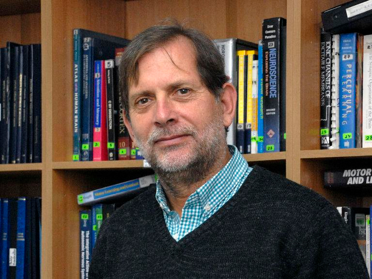
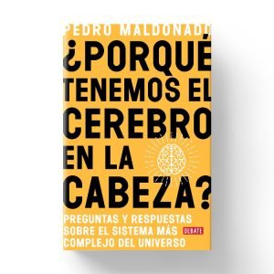
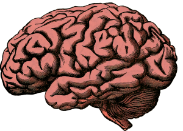

El neurocientífico Pedro Maldonado acaba de publicar su primer libro de divulgación, ¿Por qué tenemos el cerebro en nuestra cabeza? A lo largo de sus páginas podemos descubrir los mayores secretos del órgano más extraordinario del cuerpo humano.
Nuestro cerebro es uno de los misterios más impenetrables del universo. Incluso los neurocientíficos más reconocidos del mundo suelen admitir que sabemos poco y nada de él: apenas unos cuantos detalles de su extraordinario funcionamiento. Por ejemplo, que es el resultado de 2,5 millones de años de evolución, que representa el 2% de nuestro peso —pero usa el 20% de su energía—, que tiene más de diez mil tipos de neuronas diferentes o que la electricidad que produce podría encender una lámpara pequeña.
Pedro Maldonado, doctor en Fisiología de la Universidad de Pensilvania, académico de la Universidad de Chile e investigador del Instituto Milenio de Neurociencia Biomédica, lo ha estudiado durante casi toda su vida, en particular las cortezas involucradas en el funcionamiento de la vista. En los últimos años, cuenta el neurocientífico, de 59 años, ha dado numerosas charlas para alumnos y público general, donde ha escuchado una y otra vez las mismas preguntas: ¿Qué es el cerebro y de qué está hecho? ¿Qué pasa con él a medida que crecemos? ¿Cómo funciona la memoria? ¿Qué diferencia un cerebro de un computador?
Eso lo llevó a recopilar ésas y otras respuestas en su primer libro ¿Por qué tenemos el cerebro en nuestra cabeza? (Debate, 2019), que fue lanzado este mes, en el que se atreve a abordar algunos de los secretos que se ocultan en el órgano más complejo del cuerpo.

Portada del libro publicado por el sello Debate.
(Fotos: Editorial Penguin Random House).
—¿Qué tanto sabemos realmente sobre el cerebro?
—Sabemos bastante poco. Es un sistema que muchos pensamos que es el más complejo del universo. Se estima que conocemos el 15% de la corteza visual primaria, una de las tantas que usamos para ver, y eso que es una de las que más conocemos. Hemos estudiado el cerebro durante décadas y hemos aprendido bastante, pero no lo suficiente para resolver algunos de sus problemas, particularmente aquellos de la medicina, como la depresión o la adicción al alcohol, que en nuestro país es uno de los desafíos de salud pública más terribles.
—¿Cuál dirías que es el mito más común sobre el cerebro?
—Que usamos solo el 10% de su capacidad. Siempre lo usamos todo, aunque de manera distinta. Un cerebro que no se usa tiende a perder sus conexiones. Otro mito es que el cerebro de hombres y mujeres tiene distintas capacidades cognitivas. Son diferentes, pero la gente piensa que las mujeres son mejores para una cosa y los hombres para otra, como esa idea falsa de que los hombres serían más inteligentes en matemáticas. Se suele atribuir habilidades cognitivas distintas a hombres y mujeres, y la evidencia muestra que no es así.
—¿Qué sabemos sobre cómo funciona la memoria?
—La memoria nos enseña varias cosas, por ejemplo, que aprendemos de distintas maneras: frente a una pizarra con un profesor, pero también mirando, haciendo, imitando, lo que implica que la estrategia pedagógica debe ser múltiple. También nos enseña que las memorias más antiguas son más fuertes que las nuevas, por eso los viejitos recuerdan más su juventud que el último mes. Además, nuestra memoria es bastante frágil, no es fiel al mundo.
—Eso podría tener implicancias en distintos ámbitos. Por ejemplo, a nivel judicial, respecto a los testimonios de los testigos.
—Los testigos no son muy confiables. Las personas están seguras, no mienten, pero en nuestra experiencia diaria, cuando nos juntamos a conversar con alguien de lo que pasó hace un tiempo, no siempre estamos de acuerdo. Las memorias no son iguales y la experiencia que van a constituir esas memorias tampoco. Dos personas que están juntas y son testigos de un accidente de tránsito van a tener distintas memorias de lo que ocurrió.

Ilustración de un cerebro humano, resultado de 2,5 millones de años de evolución.
—¿Por qué la memoria es tan maleable?
—A diferencia de un computador, donde las cosas se guardan en un lugar y quedan iguales para siempre, la memoria se enciende reactivando redes neuronales. Por lo tanto, se robustece mientras uno más la llama de vuelta. Pero al mismo tiempo, cada vez que uno la llama es susceptible de ir cambiando. Además, en el circuito donde se retiene la memoria hay otras cosas guardadas y todo se va mezclando. Uno ni siquiera está seguro de si un recuerdo es necesariamente una memoria o algo que escuchó o leyó. Hubo un tiempo en Estados Unidos donde los hijos demandaban a sus padres por abusos cometidos cuando tenían meses de vida. Esas son memorias falsas, porque el cerebro no forma memoria tan temprano. Lo hace, en promedio, a los tres años y medio.
—¿Por qué a veces uno confunde lo que vivió con lo que soñó?
—Cuando uno sueña, el cerebro tiene una actividad indistinguible de cuando está despierto. Por lo tanto, durante el sueño el cerebro hace las mismas cosas que en la vigilia. Si hay un sueño con componente emocional, quizás uno lo recuerda al despertar. Años después, no se acuerda de que era un sueño y lo incorpora a las memorias que sí vivió y ahí se empiezan a confundir las cosas. La memoria puede ser fiable, pero también no lo es. Al final, hay cierta incertidumbre acerca de si el relato de una persona es fiel o no a la realidad, por eso en lo que solemos confiar es en los relatos de un conjunto de personas.
—Si pudieras entender uno de los misterios del cerebro, ¿cuál sería?
—El que he estado trabajando casi toda mi vida: la experiencia de la percepción. Quiero saber cómo funciona el cerebro, pero en específico cómo vemos. Las neuronas tienen actividad eléctrica y química, pero ¿cómo eso se transforma en colores y formas? Es un misterio. También me interesa descubrir qué es tocar, qué es una emoción, qué es la conciencia. La experiencia de lo que uno vive, eso es lo que más me gustaría entender.
Texto: Rafaela Lahore
Archivo: publicado originalmente el 2 de septiembre de 2019 en el sitio anterior de la Sociedad (https://socneurociencia.cl/2019/09/02/ese-misterioso-organo-llamado-cerebro/).